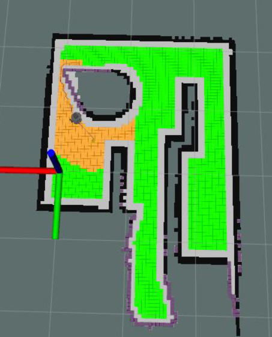
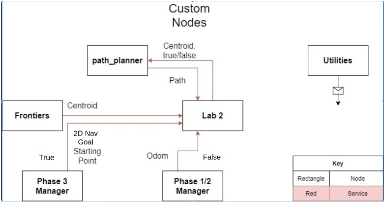

Frontier Exploration and Pathfinding Turtlebot
Executive Summary
A turtlebot, a small non-holonomic driving robot equipped with LiDAR, was simulated in Gazebo and commanded with ROS framework to traverse and explore an unknown terrain. Through SLAM and Gmapping, the turtlebot is capable of remembering its environment and its location within it. This robotic challenge was divided into three phases and would be simulated with ROS architecture. The robot must successfully map/explore an unknown map (1), return to its starting position once done (1), and finally be able to travel to any desired point on the map (3).My Contribution
This was a 7-week project with 2 other teammates. In this project, I lead the software design, meetings, and writing. I learned the basics of ROS, SLAM & Gmapping, custom ROS message types, CMakeLists, and how to implement different types of algorithms. I am extremely fond of this project as it was my first introduction to the behavior of a robot and stepping up to a leadership role. Before this, I had only a very small taste of Python, ROS, Gazebo, and algorithms.Design Overview
Phase 1 is accomplished with the basic outline:- Calculate the C-Space of the map.
- Find a frontier to explore.
- Plan the optimal path to the frontier.
- Navigate to the frontier while avoiding obstacles.
- Repeat the above steps until the map is completed.
- Save the completed map.
In Phase 3, the complexity escalates as the robot is tasked with reaching a specific "goal" position within the maze. Unlike Phase 1, where the robot dynamically created its map using Gmapping, this time it relies on a static map. Furthermore, this goal location may not align with the robot's previous trajectory, meaning it cannot merely retrace its prior steps to achieve its objective.
Breaking up the Problem
To simplify the path-finding, an Occupancy Grid of 5cm x 5cm squares was used to represent the environment. In this scheme, SLAM and Gmapping will mark the appropriate indices with an open space (gray), a wall (black), or an unknown. We classify the border of the unknown and known as a frontier. In RVIZ, we highlight these cells are purple. A dilation algorithm was utilized to classify groups of frontiers and expand them if desired. We reduce the C-Space (configuration-space) by defining walkable only cells to not bordering known walls by 10 cm. This buffer prevents the robot from inadvertently traveling too close to a wall and becoming impaired. Walkable cells are shown in green.An A* algorithm calculates the optimal path between the robot's current position and the most preferable frontier. The nodes A* searched are overwritten to be orange. The most interesting frontier is the largest ratio of a group of frontier cells by the distance away it is from the robot. Meaning, that a medium-sized frontier close to the robot is more desirable than a small frontier far away.
In this implementation, A* is calculated again once it reaches the frontier goal. If the robot determines that the entire map has been explored, then it will automatically return home to satisfy Phase 1 and Phase 2 requirements.
Driving the turtlebot was simplified as a P controller to navigate to the next cell in front of the robot. This is very similar to a Rotate-Drive-Rotate algorithm.
Phase 3 was simply completed by employing the A* algorithm to find the most optimal path to the desired waypoint from the saved map. Then, the robot navigates to the goal and the challenge is completed.
Additional Media

